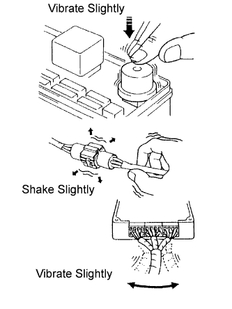
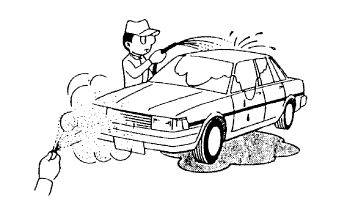

HOW TO TROUBLESHOOT ECU CONTROLLED SYSTEMS > HOW TO PROCEED WITH TROUBLESHOOTING |
| OPERATION FLOW |
| 1.VEHICLE BROUGHT TO WORKSHOP |
| |||||
| 2.CUSTOMER PROBLEM ANALYSIS |
Ask the customer about the conditions and environment when the problem occurred.
| |||||
| 3.INSPECT BATTERY VOLTAGE |
| |||||
| 4.SYMPTOM CONFIRMATION AND DTC (AND FREEZE FRAME DATA) CHECK |
Visually check the wire harnesses, connectors and fuses for open and short circuits.
Warm up the engine to the normal operating temperature.
Confirm the problem symptoms and conditions, and check for DTCs.
| Result | Proceed to |
| DTC is output | A |
| DTC is not output | B |
|
| ||||
| |||||
| 5.DTC CHART |
Check the results obtained in "SYMPTOM CONFIRMATION AND DTC (AND FREEZE FRAME DATA) CHECK". Then find the output DTC in the DTC chart. Look at the "Trouble Area" column for a list of potentially malfunctioning circuits and / or parts.
|
|
| 6.PROBLEM SYMPTOMS CHART |
Check the results obtained in "SYMPTOM CONFIRMATION AND DTC (AND FREEZE FRAME DATA) CHECK". Then find the problem symptoms in the problem symptoms table. Look at the "Suspected Area" column for a list of potentially malfunctioning circuits and / or parts.
| |||||
| 7.CIRCUIT INSPECTION OR PARTS INSPECTION |
Confirm the malfunctioning circuit or part.
| |||||
| 8.ADJUST, REPAIR OR REPLACE |
Adjust, repair or replace the malfunctioning circuit or parts.
| |||||
| 9.CONFIRMATION TEST |
After the adjustment, repairs or replacement, confirm that the malfunction no longer exists. If the malfunction does not reoccur, perform a confirmation test under the same conditions and in the same environment as when the malfunction occurred the first time.
|
| ||||
|---|---|---|---|---|---|
| CUSTOMER PROBLEM ANALYSIS |
| What | Vehicle model, system name |
| When | Date, time, occurrence frequency |
| Where | Road conditions |
| Under what conditions? | Running conditions, driving conditions, weather conditions |
| How did it happen? | Problem symptoms |
| SYMPTOM SIMULATION |
|  |
VIBRATION METHOD:
When a malfunction seems to occur as a result of vibration.
PART AND SENSOR
Apply slight vibration with a finger to the part of the sensor suspected to be the cause of the problem, and check whether or not the malfunction occurs.
CONNECTORS
Slightly shake the connector vertically and horizontally.
WIRE HARNESS
Slightly shake the wire harness vertically and horizontally.
HEAT METHOD:
When a malfunction seems to occur when the area in question is heated.
Heat the component that is the possible cause of the malfunction with a hair dryer or similar device. Check if the malfunction occurs.
|  |
WATER SPRINKLING METHOD:
When a malfunction seems to occur on a rainy day or in high-humidity.
Sprinkle water onto the vehicle and check if the malfunction occurs.
 |
HIGH ELECTRICAL LOAD METHOD:
When a malfunction seems to occur when the electrical load is excessive.
Turn on the heater blower, headlight, rear window defogger and all other electrical loads. Check if the malfunction reoccurs.
| DIAGNOSTIC TROUBLE CODE CHART |
| Item | Description |
| DTC No. | Indicates the diagnostic trouble code |
| Detection Item | Indicates the system or details of the problem |
| Trouble Area | Indicates the suspected areas of the problem |
| See Page | Indicates the page where the inspection procedures for each circuit is to be found, or gives instruction for checking and repairs. |
| PROBLEM SYMPTOMS TABLE |
| Item | Description |
| Problem Symptom | - |
| Circuit Inspection, Inspection Order | Indicates the order in which the circuits need to be checked |
| Circuit or Part Name | Indicates the circuit or part which needs to be checked |
| See Page | Indicates the page where the flowchart for each circuit is located |
| CIRCUIT INSPECTION |
| Item | Description |
| Circuit Description | The major role, operation of the circuit and its component parts are explained. |
| Diagnostic Trouble Code No. and Detection Item | Indicates the diagnostic trouble codes, diagnostic trouble code settings and suspected areas for a problem |
| Wiring Diagram | This shows a wiring diagram of the circuit. Use this diagram together with ELECTRICAL WIRING DIAGRAM to thoroughly understand the circuit. Wire colors are indicated by an alphabetical code:
|
| Inspection Procedures | Use the inspection procedures to determine if the circuit is normal or abnormal. If abnormal, use the inspection procedures to determine whether the problem is located in the sensors, actuators, wire harnesses or ECU. |
| Indicates the condition of the connector of the ECU during the check | Connector being checked is connected. Connections of tester are indicated by (+) or (-) after the terminal name. Connector being checked is disconnected. For illustrations of inspections between a connector and body ground, information about the body ground is not shown in the illustration. |